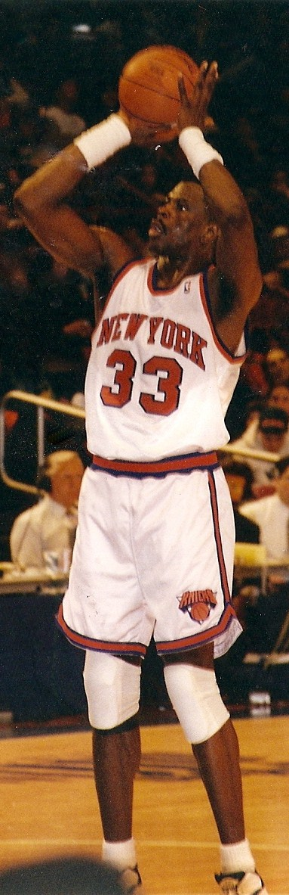
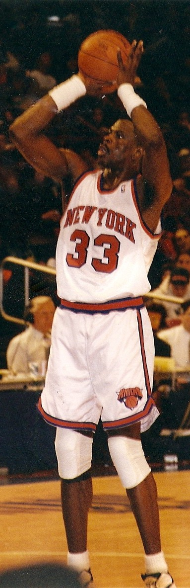

New York Knicks
_-_Full_(48124330357).jpg)
A Timeline of The Team
 

June 6th, 1946 was a historic day for the sport of basketball. On this day, in the Commodore Hotel located in New York, 11 different basketball franchises decided to form the Basketball Association of America and the New York Knickerbockers (named after a style of pants worn by Dutch Settlers in this area) were born. Later that year, on November 1st, the Knickerbockers would go on to win the first ever regular season game in the BAA, defeating the Toronto Huskies by two points with a final score of 68-66. As for the rest of the season, the Knicks played very decent. Through 60 games they were able to manage 33 wins and 27 losses which was enough for them to clinch a spot in the playoffs. In the first round they took on the Cleveland Rebels in a best out of three series. The Knickerbockers were able to storm back from a 26-point deficit in their first ever playoff game which helped them clinch this first series. Though they were riding high after a great performance in the first round, the Knickerbockers were swept by the Philadelphia Warriors which ultimately brought their season to an end.
For the next four years, the narratives of each season were generally the same for the Knickerbockers. Each year they would make the playoffs but fall short of reaching the finals. In the 47/48 season, the Knicks had a quick exit from the playoffs after losing to the Baltimore Bullets. In 48/49, they beat the Bullets but fell short of a finals appearance when they lost to the Washington Capitals. In 1949 however, the Basketball Association of America merged with the National Basketball Association. The 49/50 Knickerbockers did well for their first season in the newly expanded NBA. They finished in 2nd place with a record of 40-28 but sadly, just like the previous seasons, they fell short of making the finals with a loss to the Syracuse Nationals. The next twenty or so years would feature many of the same stories as mentioned above. The Knickerbockers would either come up short of an NBA championship, or not even make the playoffs at all. They had run into somewhat of a drought and just couldn’t quite achieve the overall goal of bringing home a title to New York. The assets and star power were there, but they would continuously get outplayed by their opponents. This was all about to change though.
The 69/70 Knicks were the team that was able to do it all. Led by superstar Willis Reed, the knicks captured the division title, posted their best record in franchise history, and managed to capture the team’s first NBA championship. While a basketball championship felt long overdue, the Knicks were able to solidify a spot in NBA history and the city of New York couldn’t have asked for anymore. Willis Reed won MVP this year and the Knicks proved that they had what it takes to be a top tier NBA franchise. The Knicks continued to play well for the next two seasons. They posted impressive regular season records, and even made the finals again in the 71/72 season. Their defeat was pretty crushing though, as only after one win, the Lakers managed to win four straight and take the title back to Los Angeles. Somehow, New York found themselves back in the finals next season where they took second place in their conference. The Knicks managed to easily get past the Bullets but ran into some trouble with the Boston Celtics. A game 7 miracle win sent them to the finals where they were able to take down the Lakers in five games, winning 4 straights to bring a second championship back to the city of New York.
Continuing to dominate for the next four years or so, the Knicks are never able to accomplish what they had in early 70s. The franchise entered a downward spiral and things did not turn around until they drafted Patrick Ewing in 1985. Ewing is also considered to be one of the greatest Knicks of all time. He was surrounded by many other notable stars and this team had some great years, but unfortunately, they were never able to get passed Michael Jordan and the Chicago Bulls. Patrick Ewing and this era of this knicks are known to be one of the greatest NBA teams that were never quite able to win a championship, and the late 80s through the 90s were mostly the same story for New York. They made it to the finals in 1994 but could not contain the Houston Rockets, who would end up winning two straight NBA Titles.
Up until the 2000/2001 season the Knicks continued to play well, but after the departure of Patrick Ewing the franchise to this day has only seen a couple of solid seasons. Plagued by bad management, and roster additions that weren’t so great, the Knicks developed a reputation of being a sub-par basketball team. It wasn’t really until the 2012/2013 season where the Knicks would make a name for themselves again. Led by Amare Stoudemire, JR Smith, Carmelo Anthony, and Steve Novak, this team boasted a lot of potential coming into the season. Stoudemire ultimately ended up getting injured, but Smith and Novak held it down with astounding shooting from behind the arc. The Knicks finished with over 50 wins for the first time since the 99/2000 season and many fans were excited to see what was next for this team. It is also worth noting that this team blew out the unstoppable Miami Heat on multiple occasions this year. Melo was also able to bring home the scoring title, averaging over 28 points a game.
It wouldn’t be until the 2020/2021 season that the knicks would make the playoffs again. RJ Barrett, Julius Randle, and a handful of other young talent were able to show New York that we still have it. This team ultimately ended up losing to the Hawks in the first round of the playoffs, but things are looking up in our future. New York is looking to come out and play better than ever with the addition of Kemba Walker, an all-star guard, this season. It should also be worth noted that Linsanity cannot be forgotten when discussing the Knicks. Linsanity was a stretch of 26 games where former Knick Jeremy Lin proceed to set the NBA on fire after coming off the bench one game and dropping 25 points. After being given more minutes, Lin proceeded to put up very impressive numbers and even found himself shining through some extremely tough situations. One night, the Knicks faced off against Kobe Bryant and the Lakers at Madison Square Garden. Not only did he manage to outscore Kobe, he put up 38 points against him. This hot streak continued for a few more games but he ultimately ended up fizzling out. This put him on the map and is certaintly something that no Knicks fans will ever forget.